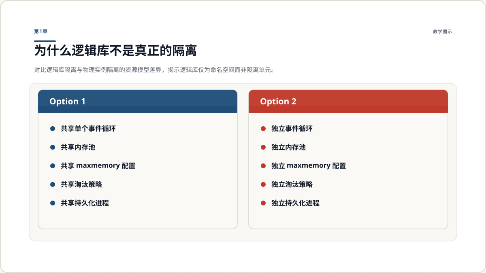
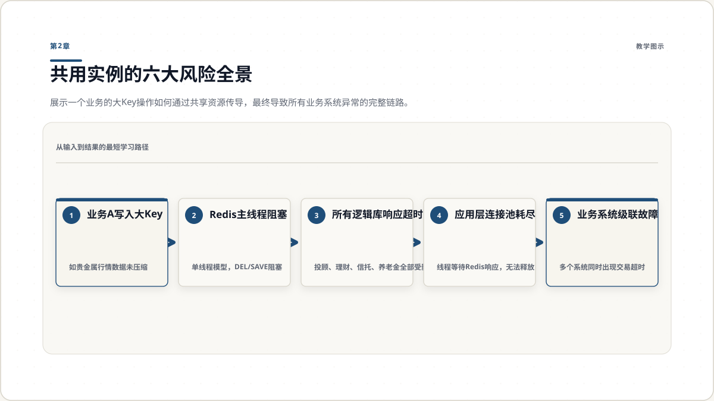
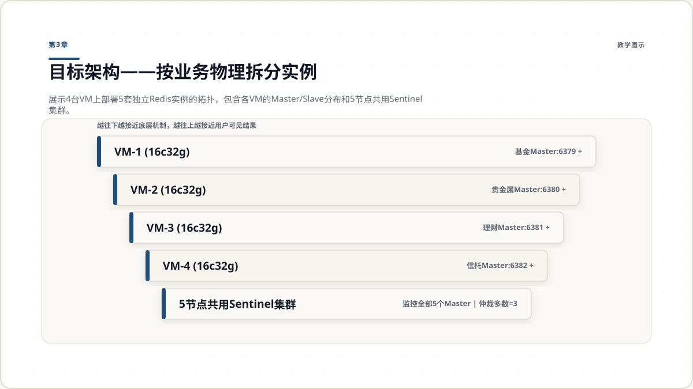
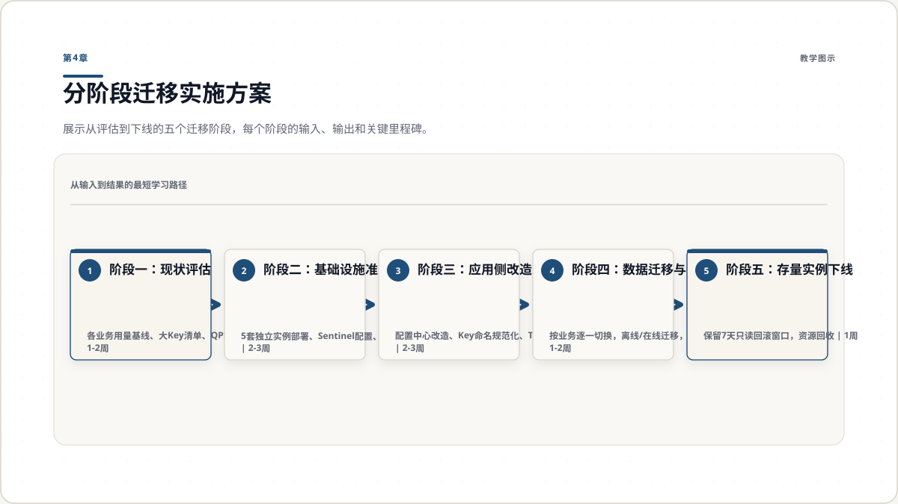
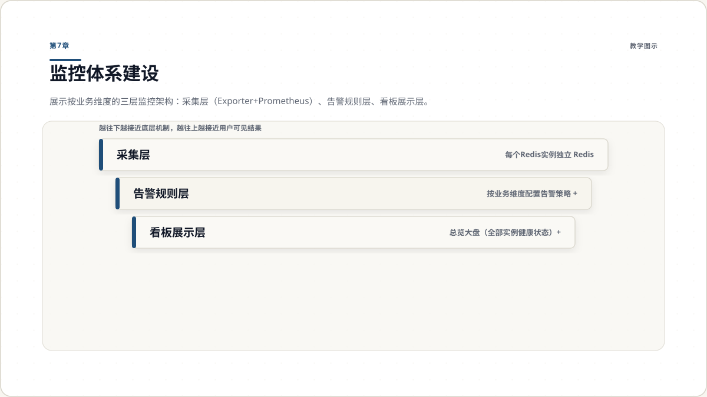

逻辑库只在Key命名空间层面做了区分，底层CPU、内存、网络、持久化全部共享。物理实例隔离才是真正的资源隔离。

风险传导链路：一个大Key操作 → 主线程阻塞 → 全实例超时 → 连接池耗尽 → 多业务同时故障。这就是共用实例的核心危险。

4台VM承载15个数据实例和5个哨兵节点。Master与Slave分散在不同VM，同一业务的两个Slave不在同一VM。5节点Sentinel集群可容忍2台宕机。

迁移按评估→准备→改造→迁移→下线五个阶段推进，总周期约7-9周，每阶段有明确交付物和验收标准。
过渡期立即落地大Key巡检和淘汰策略调整，在不改变架构的前提下快速降低风险。矩阵中的阈值可根据实际业务调整。
监控从实例级细化为业务级：每个实例独立采集，告警按业务维度路由，看板支持总览和下钻，实现问题秒级定位。

安全加固从访问控制、网络隔离、数据规范三道防线入手，配合准入-变更-审计的治理闭环，从源头防止问题回潮。